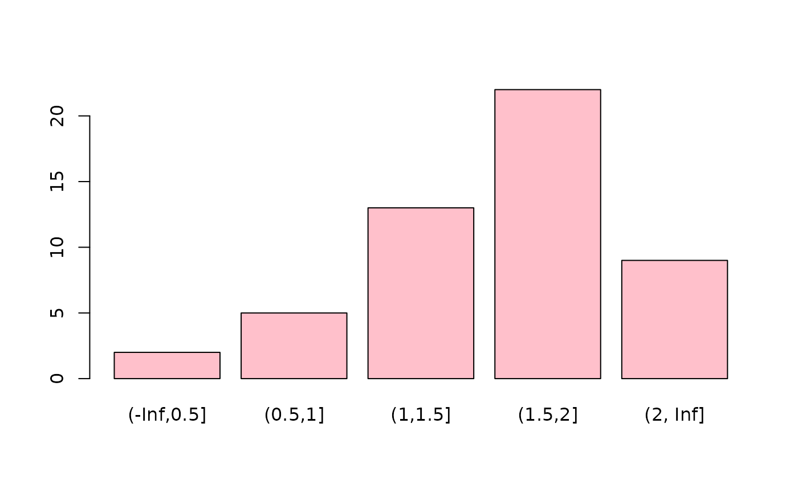

Data for Exercise 1.33
Income
A data frame/tibble with 51 observations on two variables
a character variable with values Alabama,
Alaska, Arizona, Arkansas, California,
Colorado, Connecticut, Delaware, District of
Colunbia, Florida, Georgia, Hawaii, Idaho,
Illinois, Indiana, Iowa, Kansas, Kentucky,
Louisiana, Maine, Maryland, Massachusetts,
Michigan, Minnesota, Mississippi, Missour,
Montana, Nebraska, Nevada, New Hampshire, New
Jersey, New Mexico, New York, North Carolina, North
Dakota, Ohio, Oklahoma, Oregon, Pennsylvania,
Rhode Island, South Carolina, South Dakota,
Tennessee, Texas, Utah, Vermont, Virginia,
Washington, West Virginia, Wisconsin, and Wyoming
percent change in income from first quarter to the second quarter of 2000
US Department of Commerce
Kitchens, L. J. (2003) Basic Statistics and Data Analysis. Duxbury
Income$class <- cut(Income$percent_change, breaks = c(-Inf, 0.5, 1.0, 1.5, 2.0, Inf)) T1 <- xtabs(~class, data = Income) T1#> class #> (-Inf,0.5] (0.5,1] (1,1.5] (1.5,2] (2, Inf] #> 2 5 13 22 9barplot(T1, col = "pink")# NOT RUN { library(ggplot2) DF <- as.data.frame(T1) DF ggplot2::ggplot(data = DF, aes(x = class, y = Freq)) + geom_bar(stat = "identity", fill = "purple") + theme_bw() # }